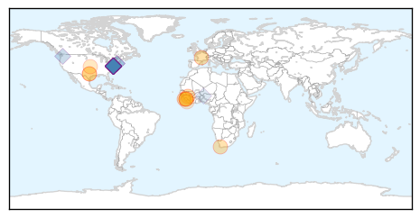
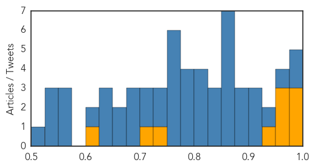
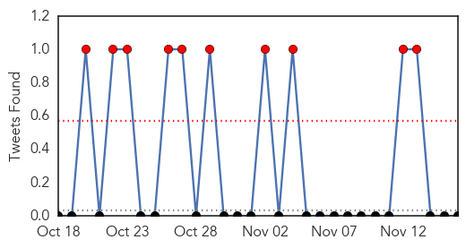
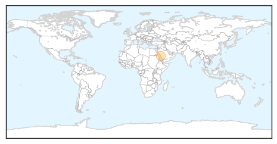

Ebola
30-Day Web Trend
0 alerts, 0 warnings

30-Day Twitter Trend
28 alerts, 0 warnings

Article Locations
Article Confidences
Top Articles:
- 0.997
- Jubilation In Freetown As Sierra Leone Declared Ebola-Free
- 0.989
- Bye Bye Ebola! Eradication spurs rap song in Sierra Leone.
- 0.988
- A Post-Ebola Society
- 0.974
- Alumna studies influenza virus for CDC
- 0.960
- William P.J. Lynch Jr.comWilliam P.J. Lynch Jr.com
- 0.956
- Building Defences Against Future Ebola Outbreaks
- 0.935
- Daily Podcast – November 16, 2015
- 0.741
- Aids, Swine and Avian Flu, Ebola seem to be the predicted first and fifth plagues of Apocalypsis-Rev
- 0.703
- ExxonMobil to Drill Offshore Post-Ebola Liberia
- 0.606
- HBO Documentary Films acquires the riveting 'Body Team 12'
Top Tweets:
- 0.976
- Guinea Health Unit Reports No Confirmed Ebola Cases for 17 Days - https://t.co/D7fK4OVaTT ebola
- 0.975
- Guinea Health Unit Reports No Confirmed Ebola Cases for 17 Days - Bloomberg https://t.co/FrPbAos2JK ebola EVD
- 0.962
- Guinea says has no Ebola cases after last patient recovers - Reuters https://t.co/i52GXRoOyy ebola EVD
- 0.948
- Ebola Outbreak News - https://t.co/bnCj88U7Im ebola
- 0.924
- Guinea releases last 68 people from Ebola quarantine - https://t.co/8ozfwwePSS ebola
- 0.923
- RT: Confirmed Ebola virus disease cases by month. 1 reported by so far for November. Just 1. https://t.co/TqDxyGwfM6
- 0.914
- African Ebola Task Force Launches Food Drive for Ebola Orphans & Neglected Children in West ... - https://t.co/G4VmBXvbB7 ebola
- 0.893
- Corey US hospitals vaccinate people with Ebola Virus Vaccine the media isn't talking about it though.
- 0.892
- Ebola the new STD
- 0.880
- A soccer club for Ebola survivors is fighting stigmas in Sierra Leone - Daily Maverick https://t.co/cFGW18dU9R ebola EVD
- 0.872
- Ebola-Free: Sierra Leone Declared Free of That Disease - https://t.co/hMOww93Zxu ebola
- 0.872
- Ebola 'Will Return' To Sierra Leone - https://t.co/TAWRtko8ZG ebola
- 0.871
- The Ebola Files 23 - https://t.co/jzbiB1GYym ebola
- 0.868
- ebola.MP3 - https://t.co/66b8INUiSL ebola
- 0.865
- Home Decor In Dallas Ebola Emergency Medical Services France - https://t.co/AR0KhMc67i ebola
- 0.858
- Call for Bloggers: Africa Against Ebola - https://t.co/gLbQ6C2hF9 ebola
- 0.851
- Second Ebola test negative in Brazil man patient released from isolation - https://t.co/2tLwvtcNU8 ebola
- 0.848
- UF professor finds effective Ebola vaccine - https://t.co/y2Lh1a1Gpi ebola
- 0.848
- Guinea health unit reports no confirmed Ebola cases for 17 days!! https://t.co/c59VsF4Vku TackleEbola
- 0.839
- Ebola la la - https://t.co/V1U60dH7Y2 ebola
- 0.823
- Boston a great town with one of the best Ebola treatment facilities for refugees with Ebola
- 0.817
- The Ebola Files Manga - Chapter 23 - https://t.co/utimSxBJK2 ebola
- 0.817
- Call for Bloggers: Africa Against Ebola -BLOGGING FOR A CAUSE - https://t.co/knytincs90 ebola
- 0.806
- can you stop Ebola from spreading? - https://t.co/QpUlxP8XIJ ebola
- 0.799
- Fashola: The Man Who Ended Ebola - THISDAY Live https://t.co/RRHq27gpkL ebola EVD
- 0.795
- Fashola: The Man Who Ended Ebola - https://t.co/dYOgx672wn ebola
- 0.790
- UF professor finds effective Ebola vaccine - The Independent Florida Alligator https://t.co/SCvbgA4zfO ebola EVD
- 0.780
- Parliament okays Ebola Vaccine Trial at Hohoe - https://t.co/S5MhtluOu2 ebola
- 0.772
- Republican debate ebola - https://t.co/UGGxfJUvLT ebola
- 0.771
- I have Ebola la la la - https://t.co/hflNLww39Y ebola
- 0.766
- Ebola nurse Pauline Cafferkey now 'critically ill' - Page 2 - https://t.co/WmhOEuQwCs ebola
- 0.765
- How to cure Ebola - https://t.co/NwvhiQuxd4 ebola
- 0.752
- Air Jordan Ebola 4 - https://t.co/BTXsDj3MtD ebola
- 0.750
- Ebola outbreak in West Africa global emergency - https://t.co/uKEXAqGtHk - https://t.co/rRKpBQc2Kr ebola
- 0.750
- A Post-Ebola Society - https://t.co/8G3dQiTyWG ebola
- 0.739
- New york times ebola - https://t.co/cgZU4dRTRY ebola
- 0.720
- Interferon-γ Inhibits Ebola Virus Infection https://t.co/gwLMMPLuTd
- 0.718
- Ebola Pop Hold It Down Remix - https://t.co/nbhigFs5vw ebola
- 0.693
- Sugar Ball Blocks Ebola - https://t.co/GlihlsSjAE ebola
- 0.692
- Resistance ….Volunteers Recount Memories Of Burnt Ebola Victims - https://t.co/Uc74W19tA2 ebola
- 0.688
- Optofluidic Systems Detect Ebola Flu Viruses - https://t.co/F964J2C0nd https://t.co/X067dtfh3z ebola EVD
- 0.672
- A Post-Ebola Society - New York Times https://t.co/sTLZKYqyIh ebola EVD
- 0.672
- A Post-Ebola Society - New York Times https://t.co/gdCQRJAzP4 ebola EVD
- 0.639
- Sugar Ball Blocks Ebola - The Biological SCENE https://t.co/44IOcDzCU3 ebola EVD
- 0.636
- Study calls for One Health approach in continued research on potential role of pigs in Ebola ... - https://t.co/NZVjdT2VnR ebola
- 0.636
- Is it likely to get Ebola in the UK? - https://t.co/2X28F9iNvB ebola
- 0.612
- 'Hoo boy'! Mark Pryor's Ebola flub inspires 'perfect' potential GOP ad - https://t.co/un2dxRL72z ebola
- 0.571
- Chai Digest: Ebola Free Sex Change Tree and More - https://t.co/ORDQxcT8ZQ ebola
- 0.556
- RT: Happy to see Ebola triage facilities empty Redemption hosp Monrovia Liberia EbolaResponse infectioncontrol http…
- 0.552
- Guinea:The final 68 people who had been in contact with an Ebola patient were released from quarantine https://t.co/oUwTjXCKHb
Showing top 50 tweets...
MERS
30-Day Web Trend
0 alerts, 0 warnings
30-Day Twitter Trend
10 alerts, 0 warnings

Article Locations
Article Confidences

Top Articles:
Top Tweets:
-
No tweets found for Nov 16, 2015